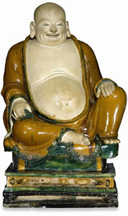

|
The
curators of the Department are all involved with research in one
form or another, exploring the past cultures of the Asian continent.
Archaeological
fieldwork was for many years carried out by Robert
Knox and Justin Morris
in Bannu Division of the North West Frontier Province of Pakistan,
as part of a collaborative project with University College London,
the Pakistan Heritage Society (Peshawar), University of Sydney
and Bryn Mawr College, Pennsylvania. Work in Bannu has ranged
from the Palaeolithic to the Early Historic Periods (see fieldwork).
Writing up the final
report of the excavations at Neolithic Sheri Khan Tarakai in Bannu Diatrict is now in progress.
Brian Durrans, anthropologist and curator of Asian ethnography, joins the department of Asia from Africa, Oceania and the Americas (formerly the department of Ethnography) to help run the department, to work with colleagues in introducing anthropological approaches and a wider range of material in the Asian galleries, and to advance the registration of Asian ethnographic collections onto the Merlin database. With Richard Blurton he is working on the Bengal Season for 2006, especially on hosting a major Durga Puja; and with the National Museum of Ethnology in Osaka , leads an international travelling exhibition of portraits for the Asia-Europe Museums Network (ASEMUS) for 2007-08, part-funded by the Asia-Europe Foundation (ASEF).
Dr
Michael Willis is directing a research project in and
around the city of Vidisha in central India. The aim of this project
is to examine ancient Vidisha through historical and human geography,
religion, archaeology, epigraphy, architecture, vernacular building
and other facets of material culture. He is, as well, completing
a catalogue of the British Museum's holdings of North Indian temple
sculpture.
Richard
Blurton is currently engaged in a major collaborative
research project, Tribal
Transitions:Cultural Change in the Arunachal Pradesh, in the far northeast of India, in the state of Arunachal
Pradesh. He is working with colleagues from the School of Oriental and
African Studies (SOAS, University of London), Arunachal University and the Centre for Cultural Research and Documentation, Itanagar, the capital town of Arunachal Pradesh. This five-year
documentary study is funded through the government's Economic
and Social Research Council. His remit is the study of material
culture and its continuing change, and involves art historical,
architectural and historical analysis, as well as the collecting
of contemporary materials for the Museum's collections, the latter
funded by the Townley Group of The British Museum Friends. Also,
he is the joint editor and contributor to a volume of essays on
recent research in Burma, Burma. Art and Archaeology (published
by BM Press, December 2002). Future plans include an exhibition
on this project both in India and London.
Carol
Michaelson researches Chinese jades and early Chinese material. She opened a new gallery of Chinese jade in November 2002.
Currently she is working with the Scientific Research Department on various papers to do with the chronology of jade tool working and also on cast iron, two of which were published in 2003 and 2004, and two more are forthcoming 2005. Carol is also managing the project of digitizing the department's Central Asian material: the first part is already online, and the the second part, the 3-dimensional material, is due to go on line at the end of 2005. Part of this programme includes organizing the visit of a Chinese specialist to research our early Chinese textiles and overseeing the in-put of this research onto the Museum's database and website in both Chinese and English. In 2004 Carol wrote a chapter for the catalogue of the collaborative exhibition on the Silk Road with the British Library.
Jane
Portal
works on the Chinese collections. She is managing a Chinese paintings catalogue project and a series of exhibitions of the British Museum's permanent collection of Chinese paintings. The first of these, 'Mountains and Water' is on display until August 2005 in Room 91.
She has made two trips to Pyongyang in connection with the establishment of diplomatic relations and has started to collect contemporary works there. She is working on a book called Art in North Korea, to be co-published by Reaktion Books and the British Museum Press in June 2005. She is also contributing editor of a British Museum Research Paper on North Korean Culture and Society (published in 2004), the papers of a BAKS Study Day held at the BM in November 2001 and the British Library in 2002. She recently published Chinese Love Poetry (ed) and Chinese Calligraphy (introduction).
Jessica
Harrison-Hall's
current research focuses on the porcelain industry in Qing China. This research will lead to a new history
of production and consumption of Qing ceramics. Following her publication 'Catalogue of Late Yuan and Ming
Ceramics', she has begun a five year project to research Chinese
Qing Dynasty (1644-1911) pottery and porcelain for a comprehensive
catalogue of the Museum's largely unpublished holdings.
Dr
Sheila Canby's research is currently working on 16th-century
Safavid art in preparation for the exhibition 'Hunt for Paradise:
Court Arts of Safavid Iran, 1501-76' which is shown at the Asia
Society in New York and the Poldi Pezzoli Museum in Milan in 2003.
Additionally, she is preparing several papers, one on the connections
between 16th-century illuminated Qur'ans in India and Iran, another
on the usefulness of surveys of Islamic Art in the museum setting
and one on the Peter Mundy album of c.1620, a traveller's account
and its Ottoman illustrations.
Dr
Venetia Porter
is continuing her work on Islamic writing and epigraphy, and in
particular is preparing a catalogue of the Museum's collection
of Islamic seals, which is in its final stage (to be published
in 2004). In addition she is carrying out research on the department's
collections of Islamic tiles.
Japan
Most archaeological work in Japan is undertaken by Japanese scholars, so, unlike colleagues in some other departments in the British Museum, Timothy Clark and his colleagues do not take part in such activities. Research within the Japanese section is aimed at the production of catalogues and explanatory material for our series of special exhibitions, and of books and articles on different aspects of the collections.
Professor Drew Gerstle (Editor) of SOAS (University of London) with Timothy Clark (Head of Section) and Akiko Yano have published the catalogue for the exhibition, 'Kabuki Heroes on the Osaka Stage, 1789 – 1830' showing in the Japanese Galleries from 30 June - 11 September 2005, (closed 8 August).
Timothy Clark and Dr. Ellis Tinios (Special Assistant) are also working on our extensive holdings of paintings, prints and printed books by artists of the Maruyama and Shijo schools. Our ceramics collections are also in the process of being catalogued. Our curators also attend international conferences, usually to present papers on their current research projects.
Victor Harris (Keeper Emeritus) and Kazuo Goto have recently published 'William Gowland, the Father of Japanese Archaeology' a book based on the archaeological materials and records collected by William Gowland in Japan from 1872–9.
Mr Harris also curated and wrote the catalogue for the recent exhibition 'Cutting Edge: Japanese Swords in the British Museum '.
.
|

| Stoneware
figure of Budai ('Laughing Buddha'), from Henan province,
northern China. Ming dynasty, dated AD 1486. |
|